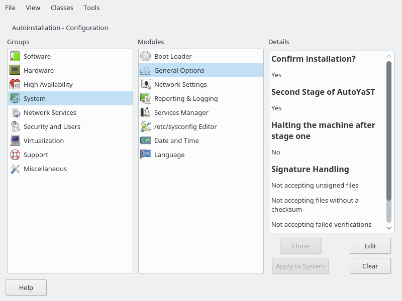
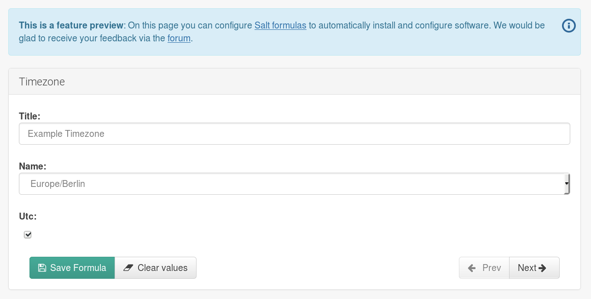

Adding Salt to AutoYaST
Imobach González Sosa
YaST Developer
igonzalezsosa@suse.com
What is AutoYaST
- Tool to perform unattended installation/upgrade of openSUSE/SUSE systems
- Partitioning, network configuration, software installation...
- ... and configuration of additional services
- Allow configuration of already installed systems
- SUSE Manager uses AutoYaST under the hood
A minimal profile
false
root
0
/root
/bin/bash
nots3cr3t
root
Writing a profile
- Clone an installed system (and tune it if needed):
- Write one from scratch

Limitations
- Limited to YaST modules (no Redis, PostgreSQL, ... you name it)
- Installation is not 100% reproducible (may need additional work)
- Only applies to the openSUSE/SUSE family
Software Configuration
Management
At a glance
- Enable administrators to configure systems and track changes
- Usually the administrator describes how the system should look like
- Automated and reproducible
- Many options with a wide range of features
Salt
- Configuration management and remote execution engine
- Event-driven
- Pretty flexible architecture
- Superb documentation
- Monitoring capabilities
- Library of reusable components
Salt jargon
- Roles: master and minions
- State: system configuration description
- Pillar: data to be used in states (sensitive data, configuration, etc.)
- Formula: reusable and pre-written Salt states
- Grains: data associated to Minions
Example state
apache:
pkg.installed: []
service.running:
- watch:
- pkg: apache
- file: /etc/httpd/conf/httpd.conf
- user: apache
/etc/httpd/conf/httpd.conf:
file.managed:
- source: salt://apache/httpd.conf
- user: root
- group: root
- mode: 644
The best of both worlds
- AutoYaST does the initial installation:
partitioning, network configuration, software installation, etc.
- Salt performs additional configuration:
more software installation, services configuration, etc.
Server based configuration
salt
salt.my-network.lan
3
50
- Minion needs to be accepted on the Salt master
- System administrator intervention is needed
Preseeded keys
salt
salt.my-network.lan
http://my-network.lan/salt/keys
- Keys are pre-accepted by the Salt master
- System administrator intervention is not needed
- Multiple keys can be stored at the same place (using different hostnames)
Masterless mode
salt
http://my-network.lan/salt/redis.tar.gz
http://my-network.lan/salt/redis-configuration.tar.gz
- Salt server is not required
- The module will retrieve states/formulas an pillars (optional)
Puppet support
puppet
http://my-network.lan/puppet/webserver.tar.gz
puppet
puppet.my-network.lan
http://my-network.lan/salt/keys
SUSE Manager Parametrizable Salt Formulas
- Mechanism to describe Pillars data
- Enable developers to build a UI to expose them
timezone:
name: "Atlantic/Canary"
utc: true
SUSE Manager Parametrizable Salt Formulas

timezone:
$type: hidden-group
name:
$type: select
$values: ["UTC",
"Atlantic/Canary",
"Europe/Berlin",
"US/Mountain"]
$default: Europe/Berlin
utc:
$type: boolean
$default: True
Some wild ideas
- AutoYaST UI
- Improve installer UI integration and errors handling
- Cloning support
- Puppet Hiera support
- Git support
- Plugins
Thanks to...
- My beloved YaST team for taking care of this module
- Duncan Mac-Vicar for his contribution and help
- Hannes Kühnemund for requesting such a feature
- The openSUSE Project!